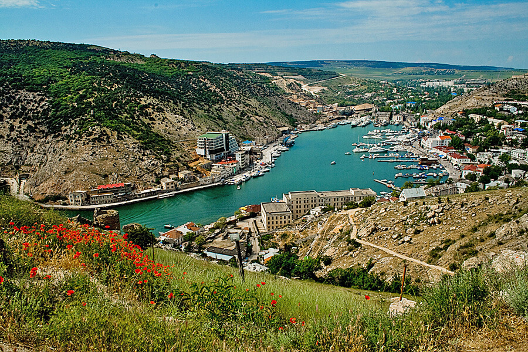

- 7 природних чудес
- 7 чудес України
- 7 замків, фортець, палаців
Балаклавська бухта з мисами Айя та Фіолент
|  |
Оточена горами, з давніх часів приваблювала людину як зручне місце для поселення. А унікальної краси миси Айя та Фіолент, що немов обрамлюють з моря бухту, додають їй ще більшої мальовничості та унікальності…
Ще у V ст. до н.е. на берегах цієї дивної бухти греки заснували поселення, що послужило початком сучасній Балаклаві (тюрк. «балик-юве» – риб’яче гніздо).
Балаклавська бухта утворилася в результаті тектонічних процесів та опускання днища південного краю Балаклавської долини в епоху альпійського горотворення.
Довжина бухти усього півтора кілометра, найбільша ширина – 425 м, глибина 5-10 м у верхів’ях, до 25 м – біля пляжу й до 35 м – на горловині.
Бухта вигнута, мальовнича, прихована горами, непомітна з боку моря.
Сучасна Балаклавська бухта – найкраще місце для яхтингу на Чорноморському узбережжі з погляду її географічних, природних і навігаційних особливостей. Вона закрита від вітру та хвиль з усіх напрямків.
На території Балаклавського району розташований також один з найбільш мальовничих куточків Кримського півострова – мис Айя (грец. – «Святий»), який через багатство природи і загадок називають «загубленим світом».
Підводний ландшафт цих місць не менш мальовничий, ніж прибережний. Кілька скельних кряжів ззовні нагадують коралові рифи. Видимість під водою часто перевищує 20 метрів; підводні гроти виступають чудовою принадою для любителів дайвингу з усього світу.
Ароматний подих сосни і ялівця, їх життєрадісні тони й вікові таємниці, розсипані в проміжках між деревами, тиша й спокій, створюють тут особливий, незабутній світ повної гармонії людини з природою.
У 8 км на захід від Балаклави знаходиться мис Фіолент, або Філенк-Бурун (турец. – «Тигровий мис»), на узбережжі якого утворилися численні ніші, кам’яні хаоси, арки, острівці. Найбільша висота мису – 152 м над рівнем моря. Пляжна смуга шириною 5-20 м, немов мозаїчне панно, засіяна великою самоцвітною галькою, що утворює тут неповторний природний мінералогічний музей. Не випадково один із пляжів мису називається «Яшмовий». Прибережна акваторія моря мису характеризується великими глибинами. У східній частині мису Фіолент на висоті 200 м відновлений найстаріший у Криму Георгіївський монастир.
Джерело: 7 Чудес України. Балаклавська бухта з мисами Айя та Фіолент
Нагору
Карадазький природний заповідник
Заповідник Карадаг (в перекладі з тюркського – „Чорна гора”) – це гірський масив в Кримських горах, стародавній згаслий вулкан, який діяв 120—160 млн. років тому.
Розташований в Криму у Судацькому районі між Коктебелем та селищем Курортним. З 1979 року — державний заповідник. Займає площу 22 кв. км від Коктебеля до селищ Щебетовка та Курортне.
Найвища вершина — гора Свята, 576 м над рівнем моря (за радянських часів називалася просто Карадаг). Хребти та вершини мають кримськотатарські назви: Хоба-Тепе (крим. Qoba Töpe – Вершина з печерами), Сюрю-Кая (крим. Süyrü Qaya – Гостра скеля). Є ущелина Гяур-Бах (крим. Gâvur Ba? – Сад невірних), джерело Гяур-Чешме (крим. Gâvur Çe?me – Джерело невірних).
Край, що досліджується вченими, являє собою унікальний природно-мінералогічний комплекс, завдяки вдалому поєднанню суші й моря, гір і рівнин, лісів, степу та напівпустелі. Тут виявлено більше тисячі видів рослин, в тому числі ендемічних. Відмічено більше 1632 видів метеликів, 199 видів птахів, 107 видів риб. На території станції створено музей природи Карадагу, є акваріум та дельфінарій. У заповіднику проводяться екскурсії по т.зв. екологічній тропі, протяжністю близько 7 км.
Карадаг являє собою декілька гряд, складених породами від ранньоюрського до пізньоюрського віку, що простежуються з південного заходу на північний схід.
Прибережний хребет (Карагач – Хоба-Тепе – Кок-Кая) складений, переважно, вулканічними породами з вертикально падаючими і частково запрокинутими пластами і вулканічними покривами андезитів,
туфів і туфобрекчій середньо-основного складу.
Туфобрекчії при вивітрюванні утворюють примхливі останці – «Король з королевою і супроводжуюча їх свита», «Чортів палець», масив «Фортеця».
Геологічна будова Хоба-Тепе дещо відрізняється від інших ділянок Карадагу наявністю жерлових вулканічних фацій – гілкоподібного нека натрових дацитів. В береговому скелястому обриві відкривається вертикальний розріз жерлової частини палеовулкану, на хр. Хоба-Тепе – окремі виходи паразитичних жерл (поперечний зріз) з лавами натрових дацитів що проривають товщу туфів і лав середньо-основного складу – “Чортів камін”.
На Карадазі поширені численні різноманітні оригінальні форми вивітрювання порід, що складені лавами, туфами, лавовими потоками, брекчіями, дайками. Тут зустрічається багато цінних мінералів – опал, сердолік, агат, халцедон, трас й ін.
Мальовничість Карадагу додають так звані «Золоті ворота» – грот-арка, складений магматичними породами стовпчастої будови. Карадаг надзвичайно мальовничий, оспіваний поетами і художниками, овіяний легендами. Вулканічний масив Карадагу – унікальний пам’ятник вулканізму середньоюрського часу на території України.
Джерело: 7 Чудес України. Карадазький природний заповідник
Нагору
Мармурова печера
Це унікальна за красою печера зі складною системою залів і галерей, яка входить до п’ятірки найкрасивіших обладнаних печер планети…
Мармурова печера знаходиться на плато гірського масиву Чатир-Даг (тюрк. – „Шатер-гора”). Видимий із різних відстаней, мальовничий силует Чатир-Дагу є символом Криму.
Плато Чатир-Дагу поцятковане численними карстовими порожнинами, що надає його рельєфу вигляд «місячного». Тут заповідано більш ніж 160 карстових печер, шахт, колодязів.
Серед них дуже цікавою є відкрита сімферопольськими спелеологами в 1987 році Мармурова печера.
Вхід до неї знаходиться на висоті 920 м над рівнем моря. Закладена вона в блоці верхньоюрських вапняків і складається з трьох частин: Головної галереї, Нижньої і бічного «Тигрового ходу».
Величезних розмірів галереї цієї печери натіканнями поділяються на окремі зали. Протяжність розвіданих ходів – 2050 м, глибина – 60 м. Довжина обладнаних екскурсійних маршрутів складає більше 1,5 км. Протяжність усіх розвіданих залів – більше 2 км, а глибина – 60 м. Температура повітря у печері постійна (+9° С). У п’яти залах можна насолодитися прослуховуванням класичної музики, яка в унікальній акустиці печери має особливе звучання.
Відвідувачів печери зустрічають величезні зали з чудернацькими формами натічних утворень, рідкісними видами кристалів. Маршрут розпочинає Галерея казок, прикрашена сталактитами, сталагмітами та натічними драпіровками. Екскурсійна доріжка огинає химерні творіння сталагмітів, що своїми контурами дивно нагадують казкових героїв: ось світло вириває з пітьми Слоненя, Мамонта, голову Господаря печери, Царівну-жабу…
У галереї «Тигровий хід» склепіння печери опускається, і можна зблизька милуватися сотнями різноманітних сталактитів. Галерея отримала свою назву через знайдені тут залишки великого хижака, скоріше за все, тигра. Пізніше вчені довели, що то були залишки печерного лева, проте стара назва вже потрапила до каталогів, тому її лишили без змін. Живописні натічні колони розділяють галерею на окремі зали. Тут можна побачити ажурні ванночки з водою, кам’яні водоспади, унікальні “геліктитові квіти”.
Зала Перебудови – одна з найбільших обладнаних печерних залів Європи та найбільша зала у печерах Криму. Її довжина – більше 100 м, висота 28 м. Величні стіни вкриті коралітовими білими «квітами», величезні кам’яні брили устеляють дно, витончені натічні колони, розмаїття сталактитів та сталагмітів вражають уяву. Закінчується зала кальцитовою греблею, яку вкривають сотні гурових ванночок. Далі видно Палацову залу з неповторними натічними колонами «Король» та «Королева». Біля них – «свита» – сталагміти різних форм.
Нижня галерея печери – природний мінералогічний музей. Тут проводяться екзотичні спелеотури. Для цього відвідувачам видаються ліхтарі та спеціальний одяг. Такий тур триває 3 години. Спелеотур у Нижню галерею починається у залі Перебудови. Стежка між кам’яними брилами занурюється у вузькі щілини, спускається униз та приводить у Рожеву залу. Тут неймовірно красиво: стіни вкриті натічними занавісками, брили вапняку з кальцитом, загадкові скелети тварин під каменями, а також унікальні «троянди», що вкривають стелю гроту.
Далі – зала Надій, де під стінами утворилися золотисті кам’яні олтарі, Балконна, Люстрова зала, в яку потрапляємо, проходячи біля «гномів», крізь сталактитовий «ліс» – сотні тонких прозорих кальцитовий трубочок. Зі стелі звисають десятки дорогоцінних «люстр», вкритих коралітовими «квітами». Тут спелеотур закінчується, а печера продовжується ще Обвальною, Русловою, Шоколадкою та Геліктитовою залами.
Унікальність Мармурової печери принесла їй світову популярність. За оцінкою відомих спелеологів, вона належить до п’ятірки найкрасивіших обладнаних печер планети. Одну з найбільш відвідуваних печер Європи, Мармурову, у 1992 році було прийнято до Міжнародної асоціації обладнаних печер.
Джерело: 7 Чудес України. Мармурова печера
Нагору
Лівадійський палац-музей
.jpg)
Лівадія – мальовничий куточок на південному узбережжі Криму, доля якого увібрала в себе поворотні моменти історії…
Свого часу Лівадійський палац був літньою резиденцією останнього російського імператора Миколи II та його родини. У 20-х роках ХХ ст. – першим у світі селянським санаторієм.
Наприкінці другої світової війни – місцем зустрічі керівників трьох союзних держав – СРСР, США і Великобританії, на якій вирішувалось питання закінчення другої світової війни і
післявоєнного світового устрою.
Слугував державною дачею керівника радянської держави Йосипа Сталіна у перші післявоєнні роки…
Сьогодні – це музей з розвинутою фондово-музейною базою і широкою дослідницькою діяльністю наукових співробітників.
Будівництво палацу продовжувалося з квітня 1910 р. по вересень 1911 р. – 17 місяців. Будинок витриманий, переважно, в стилі Відродження з включенням мотивів візантійської (церква), арабської (внутрішній дворик), готичної (колодязь з химерою) архітектури. Різноманітні архітектурні стилі – своєрідна данина моді початку XX ст. використана й в оформленні інтер’єрів палацу. Палац оточений великим парком – одним із найкращих на Південному узбережжі Криму.
Нині Лівадійський палац-музей – визнаний громадсько-культурний центр України з проведення найбільших миротворчих акцій, значних культурних і політичних заходів на високому державному рівні.
Джерело: 7 Чудес України. Лівадійський палац-музей
Нагору
Херсонес Таврійський
.jpg)
Історія Херсонеса є частиною історії Давньої Греції, Давнього Риму, Візантії, Київської Русі. Адже саме тут, у Херсонесі, згідно з літописними даними, відбулося велике Таїнство – Хрещення Київського князя Володимира, який потім поширив християнство на всю Київську Русь…
Херсонес Таврійський – таку назву носило місто, засноване давньогрецькими колоністами понад дві з половиною тисячі років тому на південному заході Кримського півострова.
Слово „Херсонес” зазвичай перекладають з грецької як „півострів”. Місто дійсно було розташоване на невеличкому півострові поміж двох бухт.
Таври – войовниче плем’я, що заселяло сусідні гористі місцевості, – спричинили народження епітету „Таврійський”, тобто „розташований на території таврів”.
Територія сучасного заповідника охоплює межі стародавнього грецького міста – Херсонеса Таврійського, що виникло тут, на узбережжі Чорного моря, у V ст. до н.е. Місто було огороджене могутніми оборонними стінами і розплановане за схемою, поширеною тоді у грецькому та римському світах. До наших днів збереглося багато давніх споруд. Серед них – елліністичний театр, римська цитадель, середньовічні християнські храми, житлові квартали, вулиці, гончарні майстерні, обладнання для засолювання риби, колодязі тощо.
У кінці XIV ст. навала кочівників поклала кінець існуванню міста, а його руїни поховала земля. Лише у 1827 р. тут розпочалися розкопки, які майже відразу принесли Херсонесу ще одну назву – „Руська Троя”. Масштаб досліджень та велика кількість археологічних пам’яток, що потребують збереження, спонукали до створення Національного заповідника „Херсонес Таврійський”.
Територія Херсонеса досліджується археологами уже 180 років. За цей час відкрито понад третину міста. Серед археологічних знахідок є унікальні – присяга громадян Херсонеса ІІІ ст. до н.е., декрети, фрески, мозаїки, шиферні ікони християнських храмів, написи-присвяти, численні побутові предмети. Загалом музейні зібрання заповідника нараховують понад 200 тисяч експонатів.
Згідно з літописом „Повість временних літ”, у 988 р. Київський князь Володимир, здійснивши напад на Херсонес, примусив Візантію видати за нього заміж царівну Анну, а потім хрестився та вінчався з нею. При цьому охрестилась і дружина (військо) князя. Після цього князь Володимир з Анною, дружиною і грецьким духовенством прибув до Києва, де того ж 988 р. відбулося славнозвісне хрещення киян у річці Дніпро.
На місці руїн хрещальні князя Володимира у 1861 р. було закладено собор в ім’я Хрестителя Русі. Нині Володимирський собор у Херсонесі реконструйований та є символом Хрещення Русі.
Сьогодні Ви зможете провести у заповіднику цілий день, розглядаючи численні експонати або просто насолоджуючись прогулянкою по території стародавнього городища. Можна здійснити й віртуальну екскурсію, скориставшись картою, на якій позначені розкопані ділянки міської території. А ті, хто особисто бажає взяти участь у розкопках, можуть зробити це, попередньо домовившись з адміністрацією.
Джерело: 7 Чудес України. Херсонес Таврійський
Нагору
Алупкінський (Воронцовський) палац
.jpg)
Воронцовський палац в Алупці і нині вражає відвідувачів пишнотою інтер’єрів і красою архітектури. Під час його будівництва був настільки майстерно використаний рельєф місцевості, що здається,
ніби палац є продовженням навколишньої природи, зокрема, величної гори Ай-Петрі.
Свого часу літня резиденція генерал-губернатора Воронцова була не тільки місцем блискучих прийомів царів й
іменитих гостей, але й центром культурного життя Південного узбережжя Криму.
Палац будувався з 1828 по 1848 роки за проектом англійського архітектора Едуарда Блора – «батька» Вестмінстерського абатства та частини фасадів Букінгемського палацу.
При будівництві
Воронцовського палацу використовувалася в основному праця кріпаків з Володимирської і Московської губерній – нащадків каменярів, що передавали з покоління в покоління мистецтво зведення
і рельєфної обробки прекрасних білокам’яних соборів. Їхнє вміння стало в нагоді, адже для будівництва палацу використовувався непростий матеріал зеленувато-сірого забарвлення, під колір гір
і вічнозеленої рослинності, – діабаз з природних розсипів в Алупці.
Навіть фундаментом палацу частково стали діабазові скелі. Це дуже твердий за своєю природою камінь,
майже вдвічі твердіший за граніт і дуже примхливий в обробці. Невірний удар молотка майстра – і вся робота марна. З величезних безформних брил висікалися рівні блоки для стін і
складні по малюнку прикраси. Ретельно шліфувався діабаз і для оформлення внутрішніх приміщень.
Всі роботи здійснювалися вручну, примітивними інструментами із застосуванням спеціального розчину, яким скріплювалися брили під час будівництва. Мабуть, саме завдяки цьому Воронцовський палац витримав потужний землетрус 1927 року.
Архітектор палацу обрав для свого творіння псевдоготичний стиль. Двоповерховий палац складається з п’яти корпусів, а на півдні розташовані парадні сходи, по обидва боки яких розміщено шість фігур левів. В цілому ж Воронцовський палац нараховує 150 приміщень, в яких збереглося чимало оригінальних меблів часів графа, твори мистецтва, порцелянові вироби та навіть 10 тис. примірників книг знаменитої Воронцовської бібліотеки.
Не був байдужим граф і до краєвиду з вікон палацу – навколо нього був закладений величезний дендропарк площею близько 40 гектарів: із мальовничими алеями, маленькими водоспадами, трьома озерами та екзотичними деревами.
У лютому 1945 р. В Криму проходила Ялтинська конференція керівників трьох союзних держав: СРСР, США і Великобританії. Алупкинський палац став резиденцією англійської делегації. Основна робота конференції проходила в Лівадії, але попереднє обговорення питань, що виносились на порядок денний, велося на нарадах міністрів закордонних справ почергово в місцях розташування кожної делегації. Двічі ці наради збиралися в парадній їдальні Алупкінського палацу.
Саме тут 8 лютого 1945 було остаточно визначено кількість країн — учасниць установчої конференції Організації Об’єднаних Націй, час і місце її скликання.
Джерело: 7 Чудес України. Алупкінський (Воронцовський) палац
Нагору
Бахчисарайський (Ханський) палац
.jpg)
Збудований як родова резиденція династії Ґераїв – правителів Кримського ханату – протягом двох із половиною століть Бахчисарайський Палац був центром політичного, духовного й культурного життя держави кримських татар…
Ханський палац є єдиним у світі зразком кримськотатарської палацової архітектури й унікальним для Європи цілісним архітектурним комплексом близькосхідного цивілізаційного кола.
Той вигляд, що його Хансарай має нині, у своїх головних рисах склався в ХVІІІ ст., коли орнаментальне і будівельне мистецтво Кримського ханату досягло висот досконалості.
З плином часу в ханському палаці змінювалися архітектурні й орнаментальні стилі: лаконічна орнаментика розписів XVII ст. із зображеннями грон винограду та імітацією мармуру вийшла з моди,
а її місце в XVIII ст. заступили вишукані рослинні композиції в стилі «кримського рококо». Останній кримський хан Шагін Ґерай, котрий увійшов до кримської історії як великий авантюрист,
що в результаті згубив власну країну, мав намір перенести кримську столицю з Бахчисарая до Кефе (нині Феодосія). Він навіть почав будівельні роботи на новому місці, але, втративши у 1783 р.
владу, не встиг реалізувати свого плану.
За імперського періоду тут знаходився поліцейський чин, що за наявності листа від губернатора дозволяв поважним гостям оглядати колишню ханську резиденцію.
Час від часу Палац відвідували російські цісарі й члени цісарської родини — природно, що через це Палац становив «режимний об’єкт» і доступ туди був відкритий не кожному.
Винятком стали
роки Кримської війни 1854-55 р., коли тут розмістився шпиталь. Після петербурзької Лютневої революції з’явилося чимало тих хто бажав привласнити унікальну пам’ятку. На щастя, художник Усеїн
Боданінський переконав Тимчасовий уряд створити тут музей, який діє й нині.
Ремонти та реставраційні роботи в Ханському палаці тривають уже понад 200 років, бо, як розповідають науковці, за свою довгу історію він зазнав численних ушкоджень та змін. З 2003 року розпочався новий етап реставрації. Загальний вигляд палацу тільки сьогодні наблизився до первинного.
Три з чотирьох будівель гарему, зимовий палац були знищені і їх вже не повернути, але під щільним науковим контролем по крихтах з руїн відновлені ханські лазні, відреставровані мечеть, Соколина башта, тривають роботи на родовому цвинтарі ханів.
Джерело: 7 Чудес України. Бахчисарайський (Ханський) палац
Нагору
Генуезька фортеця
.jpg)
Судацьке укріплення як за історико-культурною значущістю, так і за масштабністю фортифікаційної системи є унікальною пам’яткою оборонної архітектури Таврії X-XVIII ст.
Фортеця розташована на стародавньому кораловому рифі, що є конусоподібною горою (Киз-Кулле-Буру). Більшість будівель Судацької фортеці, що збереглись до наших днів, належать генуезькому періоду, тому її іменують «генуезькою». Загальна площа фортеці – майже 30 гектарів, довжина мурів по периметру – більше 2-х кілометрів. Стіни двометрової товщини досягають 6-8 метрів у висоту. Генуезька фортеця прикрашена 14-ма збереженими баштами, (висотою до 15 метрів) що надають їй неперевершеного вигляду.
Фортеця була побудована за проектом генуезьких фортифікаторів у кращих традиціях західноєвропейського середньовіччя, вона вражає досконалістю інженерної думки. ЇЇ площа – 29,5 гектара. Зі сходу та півдня цитадель була неприступна, із заходу — важкодоступна, з північного сходу доступ перегороджував глибокий рів. Фортеця має два яруси оборони між яки розташовувалось місто. Нижній ярус являє собою зовнішню масивну стіну висотою 6-8 метрів і товщиною 1,5 – 2 метри. Стіна укріплена чотирнадцятьома бойовими 15-метровими вежами й комплексом Головних воріт. Верхній ярус складається з Консульського замка й веж, з’єднаних стіною, а також комплексу Дозорної вежі на самій вершині. За межами кріпосних стін розташована ще одна башта — Фредеріко Астаґверра (Портова). За часів генуезців вона з’єднувалася стіною з Кутовою баштою фортеці і з баштою, що стояла на горі Палвані-оба. Ця оборонна лінія захищала територію старого порту Солдайі.
До наших днів з башт північно-східної ділянки нижнього оборонного поясу краще збереглася триярусна, відкритого типу (тристінна) башта Пасквале Джудіче, споруджена 1392 р. Цікавими є і башти Півкругла (єдина в системі фортеці півкругла в плані) та Коррадо Чікало, яку було зведено в 1404 р. З оборонних споруд портового укріплення, розташованих біля західного підніжжя Фортечної гори, збереглася триярусна, квадратна в плані башта Астагвера (Портова), споруджена в 1386 р.
Джерело: 7 Чудес України. Генуезька фортеця